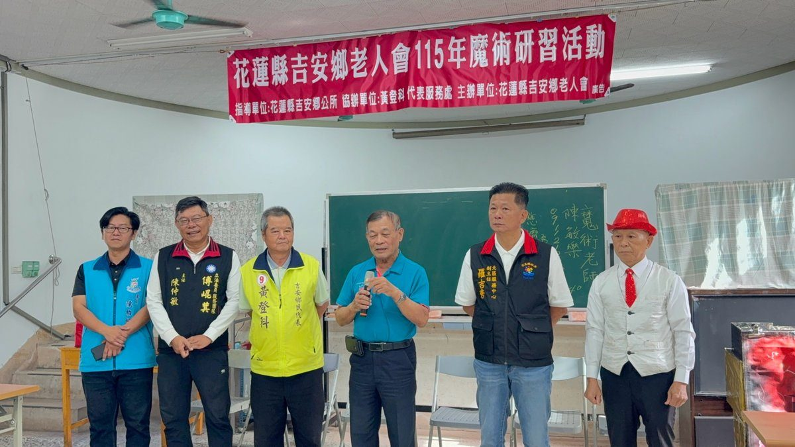

吉安鄉攜手老人會辦魔術研習 銀髮長輩動腦變出新活力

可樂電子報小編/編輯
為豐富銀髮長輩精神生活並鼓勵終身學習，花蓮縣吉安鄉公所攜手鄉民代表黃登科及吉安鄉老人會，日前於老人會一樓交誼廳熱鬧辦理「115年魔術研習活動」。活動打破傳統長者講座模式，特別邀請專業魔術師親臨現場演出，並深入淺出解說魔術背後的巧思與手法原理，讓長輩們在驚喜與歡笑中開拓視野、動手體驗學習樂趣，展現吉安鄉多元樂齡的朝氣與活力。

活動現場以充滿神祕色彩的魔術為媒介，為長輩日常注入截然不同的新鮮體驗。魔術師陳敏樂透過生動詼諧的舞台表演，搭配近距離手法解說與即興互動，邀請長輩走上舞台化身為表演助手與「最佳搭檔」。當常見的道具在魔術師手中瞬息萬變，現場驚呼聲與歡笑聲此起彼落；長者們不僅看得目不轉睛，更在趣味引導下一步步拆解機關奧妙，親身感受魔術的奇妙魅力，在歡樂互動中活絡思維並增進鄰里情誼。

吉安鄉老人會理事長張良印致詞表示，由衷感謝吉安鄉公所與鄉民代表黃登科促成這場富含創意的研習課程，同時感謝花蓮縣政府北區服務中心副主任羅吉秀、立法委員傅崐萁服務處主任陳仲敏及鄉公所專員陳柏帆等貴賓蒞臨關心。他特別指出，此次活動兼具觀賞與實作教學，讓長輩不僅看得開心，更學會幾手能向子孫炫耀的魔術小技巧，動腦又動手，為長者帶來滿滿的成就感與自信心。

代表鄉長游淑貞出席的專員陳柏帆轉達公所對鄉內長輩的親切問候，感謝長者們多年來熱心支持吉安鄉推動社會福利、銀髮照護及各項社區文康活動。游淑貞鄉長強調，長者是地方最珍貴的智慧資產，公所團隊始終以建構長輩「健康、快樂、充實」的生活為施政核心；未來將持續凝聚地方各界民代與社團力量，深化社區陪伴關懷網絡，讓每位銀髮長輩都能在友善溫暖的環境中安享樂齡時光。

吉安鄉公所未來將持續鏈結各村社區、民意代表與民間團體資源，依據高齡化社會需求規劃更多元豐富的樂齡活動，涵蓋健康促進、藝文體驗到跨領域終身學習等面向，積極打造世代共融的友善城鄉。公所期盼透過創新的研習內容，鼓勵長者跳脫被動受照顧的角色，持續探索新知、參與公共事務並分享人生經驗，攜手營造幸福宜居、銀髮樂活的永續吉安城鄉。
📸 更多現場紀實影像